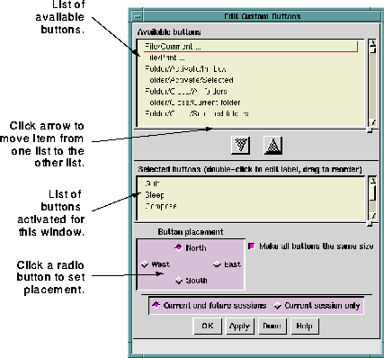
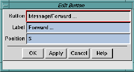

The
Buttons ... option enables you to select a large number of
shortcut function buttons to display in
Ishmail's primary
windows-Main window, Composition window, Reading window,
and Comment on Application window. These buttons help
streamline your use of the mail interface. Instead of possibly
navigating through several menu layers to get to the function
you want to perform, you simply click the associated shortcut
button.
You can specify the location of shortcut buttons by selecting
options in the
Button placement section at the bottom of the
Edit
Custom Buttons window.
NOTE:
The custom buttons option operates exactly
the same way in all of
Ishmail's primary
windows. The only difference is the type of
shortcut functions you can select for a
particular window. To see the available
shortcut functions for either the Composition
window, Reading window, or Comment on
Application window, click the
Buttons ... option
in that window's
Options pull-down menu.
To specify shortcut buttons, click the
Buttons ... option. The
Edit
Custom Buttons window appears.

The
Edit Custom Buttons selections are arranged in two lists as
follows:
- Available buttons list
- This list contains all possible functions for which you can
assign a shortcut button. The names correspond to menu
or option names, separated by slashes.
NOTE:
If you select a shortcut button to display, its
widget name is added to your
.ishmailrc
resource file. The widget name is neither the
button name nor the button label. It is an
internal variable name.
- Selected buttons list
- This list contains the names of buttons you have selected,
or activated.
NOTE:
When you activate a button, its button name
is removed from the
Available buttons list and
added to the
Selected buttons list.
To create (activate) a button:
- Single-click on the name of a button in the
Available buttons
list. Note that with drag-select or Ctrl-click you can
highlight more than one name.
- Click the down-arrow button, which moves the
highlighted name(s) to the
Selected buttons list.
Or, use the middle mouse button to drag the highlighted
names and drop them into the
Selected buttons list.
- In the
Button placement area, specify the display location for
the buttons by clicking on the appropriate radio button.
- To make all buttons the same size (based on the number
of characters in the longest button name), activate the
Make all buttons the same size selection box. In the
Number of
rows field, specify the number of rows to use in displaying
the buttons. Or, in the
Number of columns field, enter the
number of columns to use in displaying the buttons.
Depending on the button placement field you have
selected, only one of these fields is activated, as described
in
Specifying Button Placement, below.
Buttons can be placed either vertically outside the left or right
margin of the
Ishmail window, or horizontally above or below the
top or bottom margin of the
Ishmail window. The radio buttons
North,
South,
West, and
East enable you to specify the placement of
shortcut buttons.
To specify the placement of shortcut buttons, click the radio
button in the
Button placement window that corresponds to the area
in the window in which you want the shortcut buttons to be
placed. Selecting
West would place shortcut buttons at left in the
window; selecting
South would place buttons at the bottom of the
window, and so forth.
If the
Make all buttons the same size selection box is activated, all
buttons will be made wide enough to accommodate the widest
button label.
Ishmail automatically chooses the appropriate number of
columns or rows required to display the buttons, depending on
the size of the window.
You can specify your own labels for the buttons. In fact, you are
encouraged to do so. The button names are inappropriate for
button labels since they tend to be very long. Button labels
should be short, descriptive names.
To specify the label for a button, double-click on the name in the
Selected buttons list. The "Edit Button Window" is displayed.

The
Edit Button window shows the button name in the
Button field,
and has two text fields you can modify.
- Label field
- This field specifies the name that appears on the button.
Edit this field to change the name of the button. Short,
descriptive labels are best, since the widest button
becomes the default size for all buttons.
TIP:
You can also adjust the size of button labels by
changing the font (see
Specifying Fonts).
- Position field
- This field specifies the order in which you want the
shortcut buttons to be displayed. The ordering is
top-to-bottom if the buttons are placed to the left or right
of the window, or left-to-right if the buttons are placed at
the bottom of the window. (See
Specifying Button
Placement.)
Apply or cancel your changes using the row of buttons across the
bottom of the window. See
Applying Your Changes.
Preceding Section: Fonts Option
Following Section: Message List Option
Parent Section: Main Window Options Menu
Contents of Ishmail User's Guide